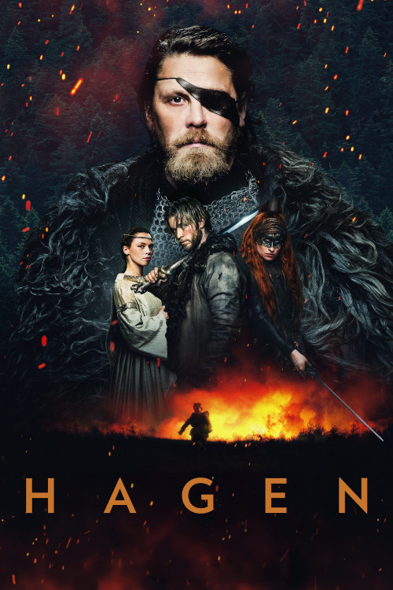
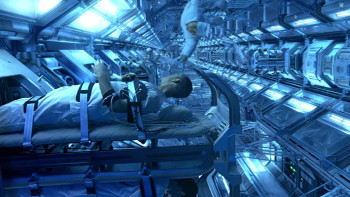

<section class="section-movie-about">
  <div class="container wrapper">
    <div class="banner">
      
    </div>
    <div class="about-movie">
      <!-- <div class="about-movie-title-box">
        <div>
          <h2 class="about-movie-main-title">Avatar</h2>
        </div>
        <div class="about-movie-title-line"></div>
      </div>
      <div class="about-movie-container">
        <div class="about-movie-img">
          
          <div class="actor-img-list">
            
            
            
            
          </div>
        </div>
        <div class="about-movie-box">
          <div class="about-movie-item">
            <h3 class="about-movie-title">Avatar (2009)</h3>
            <p class="about-movie-txt"><span>Rating: </span>7.2</p>
            <p class="about-movie-txt"><span>Year: </span>2009</p>
            <p class="about-movie-txt">
              <span>Actors: </span>Zoe Saldana (Neytiri), Zoe Saldana (Neytiri)
            </p>
            <div class="screen-img">
              <ul class="screen-img-list">
                <li class="screen-img-item">
                  
                </li>
                <li class="screen-img-item">
                  
                </li>
                <li class="screen-img-item">
                  
                </li>
              </ul>
            </div>
          </div>
        </div>
      </div>
      <p class="about-movie-descr">
        <span>Description: </span>
        When his brother is killed in a robbery, paraplegic Marine Jake Sully
        decides to take his place in a mission on the distant world of Pandora.
        There he learns of greedy corporate figurehead Parker Selfridge's
        intentions of driving off the native humanoid "Na'vi" in order to mine
        for the precious material scattered throughout their rich woodland. In
        exchange for the spinal surgery that will fix his legs, Jake gathers
        knowledge, of the Indigenous Race and their Culture, for the cooperating
        military unit spearheaded by gung-ho Colonel Quaritch, while
        simultaneously attempting to infiltrate the Na'vi people with the use of
        an "avatar" identity. While Jake begins to bond with the native tribe
        and quickly falls in love with the beautiful alien Neytiri, the restless
        Colonel moves forward with his ruthless extermination tactics, forcing
        the soldier to take a stand - and fight back in an epic battle for the
        fate of Pandora.—The Massie Twins
      </p> -->
    </div>
  </div>
</section>
